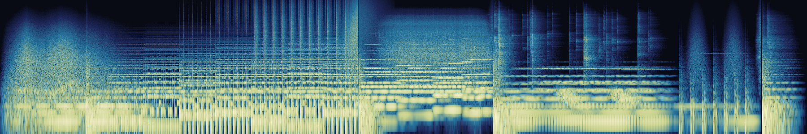

Gerado por build_trailer_audio.py (nesta pasta). Seeds fixas: rodar de novo dá o mesmo arquivo.
v1 · primeira versão. Trilha de 90 s em 6 seções (tempestade, construção a 120 BPM,
o planeta muda, a virada fria, o gelo gigante, corte + logo), marcadores em trailer_music.json
e uma pasta sfx/ com 18 sons copiados do jogo e 4 novos de trailer. Eu não consigo ouvir:
tudo aqui foi validado por medição (loudness, pico, espectro, silêncios). A palavra final é do teu ouvido.
Trilha · trailer_music.wav

Pouso na tempestade
Construir e explorar
O planeta muda
A virada (Dra. Ilves)
O gelo gigante
Corte seco + logo HESPER
Em cima: espectrograma (30 Hz embaixo, 16 kHz em cima). Embaixo: forma de onda. Linhas amarelas = hits.
90.000 s · 44,1 kHz · 16-bit · estéreo · -13.9 LUFS integrado ·
true peak -1.2 dBTP · pico de amostra -1.6 dBFS · LRA 14.0 LU ·
limitador no máximo -4.0 dB (só nos picos do rufar de 39 s e dos hits)
Seções
o que tenta passar
nível*
Pouso na tempestade Vento de banda larga respirando, uivo distante, poeira no fundo, drone em Lá (quinta vazia) subindo devagar e um Sib roçando no fim (tensão contida). Baque do pouso em 9,6 s.
-19.7 dB
Construir e explorar 120 BPM. Baixo em colcheias com o filtro abrindo; a cada 8 s entra uma camada: 20 s pulso grave e arpejo, 24 s chimbal, 28 s palma e picaretadas do jogo como percussão, 36 s subida e rufar. Acordes A add9, F maj7(#11), D add9, E sus4: otimista, com o Si natural sobre o Fá dando a estranheza.
-17.4 dB
O planeta muda Sem bateria. Pads largos em Lá maior (como o amb_green), melodia lenta, brilhos com reverb longo e chuva de verdade bem baixa. Em 53 s volta o F maj7(#11) e o filtro fecha.
-15.2 dB
A virada (Dra. Ilves) Tudo cai. Drone Lá1 + Sib1 (batimento lento), trítono, um agudo que escorrega meio-tom, gelo estalando (estalos grandes em 59, 65 e 71 s pras falas dos LOGs) e gemidos de gelo.
-20.9 dB
O gelo gigante Quase silêncio. Batimento grave lento (1,30 s acelerando pra 1,12 s), respiração de ar bem baixa, um resto de Lá. Sugada reversa 84,0-84,85 e 150 ms de silêncio absoluto.
-30.0 dB
Corte seco + logo HESPER Baque grave de ruído, gelo partindo, Lá aberto florescendo no reverb e cauda até 90 s.
-21.2 dB
* energia média com ponderação tipo K aproximada (não é LUFS certificado). Serve pra comparar seções:
a construção e a abertura são o "alto", a virada cai ~5 dB e o gelo gigante ~13 dB.
Hits e deixas pro corte (trailer_music.json)
O botão toca a partir de 1,5 s antes do hit. Frames contados a partir do 0 da trilha.
De 12 a 40 s a grade é de 120 BPM: compasso = 2 s, tempo = 0,5 s (cortes em múltiplos de 2 s caem na cabeça do compasso).
tempo
tipo
o quê
frame @30
frame @60
hit
pouso (baque)
288
576
hit
o pulso começa (1ª nota do baixo)
360
720
cue
entra o pulso grave e o arpejo
600
1200
cue
entra o chimbal
720
1440
cue
entra a palma e a picareta
840
1680
cue
começa a subida
1080
2160
cue
respiro de 80 ms antes do hit de 40 s (silêncio)
1198
2395
hit
abertura (a cratera derrete)
1200
2400
cue
acorde 2 (Ré maj7)
1320
2640
cue
acorde 3 (Fá# m9)
1440
2880
cue
estranheza volta, filtro começa a fechar
1590
3180
hit
a queda (corte pro frio)
1650
3300
hit
estalo de gelo · deixa do LOG 1
1770
3540
hit
estalo de gelo · deixa do LOG 2
1950
3900
hit
estalo de gelo · deixa do LOG 3
2130
4260
cue
sugada (reverso) começa
2520
5040
cue
silêncio total
2546
5091
hit
corte seco + logo HESPER
2550
5100
Efeitos · sfx/
As cópias são idênticas byte a byte aos arquivos do jogo (mono, no volume do jogo: vários são baixos de
propósito). Os 4 novos são estéreo.
Impacto do logo (9 s com a cauda): baque grave, gelo partindo, Lá aberto no reverb. volume sugerido: 0.8 (só se o vídeo NÃO usar o 85 s da trilha) · novo, feito pro trailer
Dicas de integração (Remotion)
Copie trailer_music.wav e os sfx que usar pra public/audio/ e toque com
<Audio src={staticFile("audio/trailer_music.wav")} /> no frame 0. A trilha já está masterizada
(-14 LUFS, -1 dBTP): volume 1.0, sem normalizar de novo.
Os tempos do trailer_music.json são em segundos: frame = Math.round(t * fps). Os campos
frame30/frame60 já vêm prontos.
Sfx por cima da trilha: deixa em <Sequence from={frame}><Audio .../></Sequence>.
Nos momentos de sfx forte (pouso, gelo desabando), abaixe a trilha uns 3-4 dB (volume ~0.65) por ~1 s com
volume={f => interpolate(...)}.
Não dobre o que já está na trilha: a música já tem o baque do pouso (9,6 s), o hit de 40 s, a queda
com gelo (55 s), estalos de gelo em 59/65/71 s, batimentos (75,7-83,1 s) e o impacto do logo (85 s). Os sfx
trailer_logo_hit e trailer_heartbeat são pra caso o vídeo mude de tempo e precise do
som solto, não pra somar.
Gelo do jogo (ice_collapse, ice_crack*) cai melhor na parte de 40-55 s (a cratera derretendo),
onde a trilha não tem gelo.
Loops (amb_storm, amb_rain*, vent_hiss, machine_hum, drill_loop)
emendam sem estalo: pode usar loop no <Audio> ou repetir em Sequence. Entre num corte com
fade de 0,3-0,5 s.
mine_hit tem 0,06 s: pra parecer mineração, repita a cada 0,25 s (no tempo da trilha de 12-40 s cai
certinho na semicolcheia) variando o volume entre 0,4 e 0,55.
O silêncio de 84,85-85,0 s é absoluto (zero digital). Corte a imagem pro preto ali e entre o logo no 85,0.
Checagens
Duração 90,000 s: ok · formato 44,1 kHz/16-bit/estéreo: ok ·
sem clipping: ok
Loudness -13.9 LUFS (alvo -14 ±0,3): ok · true peak -1.2 dBTP (≤ -1): ok
· pico de amostra ≤ -1 dBFS: ok (medido com o filtro ebur128 do ffmpeg)
Silêncio antes do logo: -240 dBFS · última amostra: 0 · DC: [5e-06, 7e-06]
· correlação L/R: 0.316 (estéreo largo, mas mono-compatível)
assets/audio/ intacto (md5 de todos os wav antes e depois do build): ok
Créditos e licenças
A trilha é síntese própria + gravações CC0 (domínio público): gelo de IgnasD ("Ice breaking/shattering"),
pedrinhas do pouso de rubberduck ("75 CC0 breaking/falling/hit sfx") e a chuva de Kresiek The Furry ("AMB Rain Loop 2"),
todos no OpenGameArt. O reverb da trilha é sintético. Nenhum crédito é obrigatório pra trilha.
Se o vídeo usar sfx/ice_crack.wav, ice_crack_1.wav ou ice_collapse.wav:
eles levam o reverb da capela de Aachen, CC BY 4.0. Aí a descrição do vídeo precisa do crédito
(texto pronto em CREDITS.md desta pasta e em assets/audio/CREDITS.md).
vent_hiss: gravação do National Park Service (domínio público). O NPS pede "No claim to original U.S.
Government works" em uso comercial.